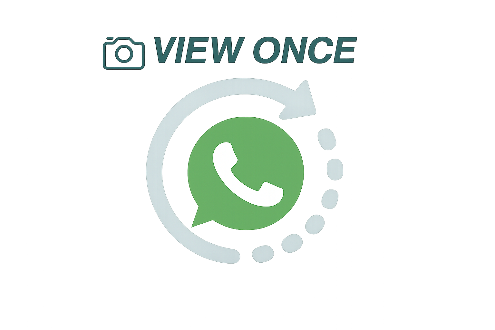

Send images and videos that disappear after the recipient views them once, giving users meaningful control over sensitive content without permanent storage, forwarding, or saving

| Field | Details |
|---|---|
| Product Name | View Once Images & Videos |
| Document Version | v1.1 |
| Author | Achintya, Associate Product Manager |
| Status | In Review |
| Last Updated | 1 June 2026 |
| Target Release | Q3 2026 |
| Stakeholders | Engineering (Backend, Mobile, Security), Design (UX/UI), Mobile (Android, iOS), Web/Desktop, Data & Analytics, Privacy & Legal, Marketing & Growth, QA |
| Distribution List | Product, Engineering, Design, Privacy & Legal, Trust & Safety, QA, Marketing |
Every day, millions of WhatsApp users share billions of images and videos across personal chats and groups. Once shared, these media files are typically downloaded to the recipient's device and stored in their gallery or app storage, where they remain accessible indefinitely. This can be deeply problematic when senders want to share sensitive or temporary content they do not want stored permanently.
This PRD proposes the View Once feature for images and videos in WhatsApp chats. With View Once, the sender can mark an image or video such that the recipient can open and view the media only once. After viewing, the media becomes inaccessible in the chat, is replaced with a placeholder, is not saved to the recipient's gallery, cannot be forwarded, and cannot be downloaded.
The sender chooses at the time of sending whether to send media as normal (default, stored indefinitely) or as View Once (seen once, not stored permanently). This feature is designed to give users meaningful control over their sensitive content while maintaining WhatsApp's core principles of privacy, simplicity, and end-to-end encryption.
The Core Problem: Users who want to share confidential, sensitive, or temporary images and videos currently have no way to ensure that these files are not permanently stored on the recipient's device. Once shared, media is downloaded to the recipient's gallery or app storage and remains accessible indefinitely, creating privacy risks, loss of control, storage concerns, and reduced willingness to share.
Who Has This Problem?
Evidence of the Problem:
| Signal | Data Point |
|---|---|
| Competitor features | Snapchat's disappearing media became instantly popular and a key differentiator; Telegram and Discord have also introduced privacy focused media features |
| App store reviews | Significant Play Store and App Store reviews explicitly ask for "view once images," "disappearing media," and "option to send images that can't be saved" |
| User quotes | "I don't want my photos saved forever." / "I want to send something private that can't be forwarded." / "My gallery is full of random images I only needed to see once." |
| Internal support trends | WhatsApp support teams observed repeated concerns about media being saved permanently and fear of forwarding; product teams noted users avoiding certain shares due to privacy concerns |
What Happens If We Don't Solve It?
Business Goals
| Goal | Target |
|---|---|
| Reduce negative reviews/tickets mentioning "view once," "disappearing media," or "media privacy" | ≥30% reduction YoY within 6 months of launch |
| Drive View Once adoption among media senders in 1:1 chats | ≥20% of users who send media in 1:1 chats within 3 months |
| Strengthen WhatsApp's position as a leader in private and secure messaging | Qualitative: positive sentiment in app store reviews and social media; differentiation from Telegram, Discord, Snapchat |
User Goals
🚫 Non-Goals (Out of Scope for v1)
| Success Metric | Target | Timeframe | Ownership |
|---|---|---|---|
| Reduction in reviews/tickets mentioning "view once," "disappearing media," or "media privacy" | ≥30% YoY decrease | 6 months post-launch | CX / Product |
| Adoption rate of View Once among media senders in 1:1 and group chats | ≥20% of media senders | 3 months post-launch | Product / Data |
| Improvement in sentiment around media privacy in app store reviews | Positive shift | 6 months post-launch | CX / Product / Marketing |
| Retention of users who use View Once (vs. non-users) | ≥ same or higher retention | 6 months post-launch | Product / Data |
| Reduction in support tickets related to media privacy and forwarding | ≥25% decrease | 6 months post-launch | CX / Product |
Current Workflow: Takes a photo of the document or screenshot, sends it as a normal image on WhatsApp, and worries that the recipient will save it, forward it, or misuse it.
Pain Point: Fear that sensitive documents (ID proof, bank details, event tickets) will be stored permanently on the recipient's device. No way to limit visibility to a single view.
Goal: Send ID proofs or verification images as View Once so they can be seen once but not saved. Have confidence the recipient cannot forward or permanently store the document.
Tech Comfort: High, uses WhatsApp, UPI, and productivity apps fluently.
Current Workflow: Send photos/videos as normal media. Once sent, the media is saved on the recipient's device and gallery with no control over forwarding.
Pain Point: Fear that personal or intimate content will be forwarded to friends, groups, or strangers. No way to ensure content is viewed once and not permanently stored.
Goal: Send personal photos/videos as View Once so they can be seen once but not saved or forwarded. Feel safer sharing sensitive moments without fear of misuse.
Tech Comfort: High, use WhatsApp, social media, and UPI frequently.
Current Workflow: Sends images/videos as normal media. Recipients save them in their gallery even if they only needed to glance at them. Content may be forwarded without consent.
Pain Point: Recipients' galleries get polluted with temporary images they don't want to keep. No way to send "just glance at this" type content that won't persist.
Goal: Send temporary or reference images as View Once so they can be seen once but not saved. Prevent gallery clutter for recipients.
Tech Comfort: Very high, uses WhatsApp, social media, and tech tools fluently.
Current Workflow: Avoids sharing certain images/photos due to fear of misuse. When she does share, she worries about permanent storage and forwarding with no control after sending.
Pain Point: Fear that images will be saved, forwarded, or misused without consent. Lives in a conservative environment where sharing certain images carries real personal risk.
Goal: Send sensitive images as View Once so they can be seen once but not saved or forwarded. Have strong assurance that content cannot be misused beyond the recipient.
Tech Comfort: High, uses WhatsApp and mobile apps regularly, with careful attention to privacy.
Primary User Journey — Sender Flow
Recipient Journey — Viewer Flow
Epic 1 - View Once Media Creation & Sending
Epic 2 - View Once Media Reception & Viewing
When a user selects an image or video to send in a chat (1:1 or group), the preview screen must show a clear View Once toggle or button. The user can enable or disable View Once before sending. The default must be normal media (View Once off) — the user must explicitly opt in to View Once.
When View Once is enabled, the UI must clearly indicate that the media will be viewable only once. This includes a label or icon showing "View Once," a brief explanation ("This photo/video will be viewable once and then deleted"), and confirmation that the sender understands before sending.
When View Once media is sent, it must appear in the chat with a clear indicator (e.g., "View Once" label or circular icon with "1"). Both sender and recipient can see this indicator before the media is opened.
When a recipient taps View Once media: the media opens in a fullscreen or dedicated viewer, the media is marked as "opened" internally, and after viewing, the media becomes permanently inaccessible and cannot be opened again.
After the recipient opens View Once media, the chat must show a placeholder instead of the media (e.g., "View Once media has been opened"). The original media is no longer visible or accessible to anyone.
View Once media must not be saved to the recipient's device gallery or photo library. The system must prevent both automatic and manual saving of the media to persistent storage on the recipient's device.
The Forward and Download options must be disabled for View Once media. The recipient cannot share View Once media with others or save it manually through any in-app mechanism.
While viewing View Once media, screenshots must be blocked at the system level. The platform should prevent screenshot capture using secure window flags on Android or equivalent protections on iOS.
While viewing View Once media, screen recording must also be blocked. The system should detect and prevent active screen recording when View Once media is open and visible on screen.
View Once media must work in both 1:1 chats (single recipient can view once) and group chats (each participant can view the media once independently). Each participant's view status must be tracked separately by the system.
| NFR ID | Category | Requirement |
|---|---|---|
| NFR-01 | Performance | View Once media must load within ≤2 seconds on average devices and networks when the recipient opens it |
| NFR-02 | Security | View Once media must be fully end-to-end encrypted (E2EE), consistent with WhatsApp's existing E2EE model; no metadata or content stored on servers in accessible form |
| NFR-03 | Reliability | System must handle network failures gracefully with retry options, clear error messages, and no data loss during partial failures; users must not experience crashes or silent failures |
| NFR-04 | Scalability | System must support high concurrent usage of View Once media during peak hours; backend must scale without performance degradation |
| NFR-05 | Availability | View Once feature must maintain ≥99.5% uptime during operational hours; critical failures detected and mitigated quickly |
| NFR-06 | Compatibility | Feature must work on Android 8+, iOS 14+, and Web/Desktop with consistent UX and no critical functionality missing on any supported platform |
| NFR-07 | Privacy | View Once media must comply with WhatsApp's data privacy policies, GDPR, India's DPDP Act, and E2EE principles; no media content logged, stored, or accessible to WhatsApp servers |
Entry Points - Feature must be discoverable from natural points in the app:
| Entry Point | Description |
|---|---|
| Media Selection Screen | After selecting an image or video, the preview screen shows a View Once toggle clearly labeled with "View Once" and an icon (e.g., "1" or a lock) |
| Chat Input Area | After selecting media from the attachment/camera icon in any chat, the View Once option appears before the user taps Send |
| Media Preview Before Sending | View Once option must be visible before sending; cannot be enabled after the media has already been sent |
| Post-Viewing (Recipient) | Once opened, the placeholder "View Once media has been opened" is non-interactive, no re-entry point exists |
Tone & Messaging Guidelines:
Recommended Microcopy:
| UI Element | Copy |
|---|---|
| Toggle label | "View Once" with a "1" icon |
| Explanation before sending | "This photo/video will be viewable once by the recipient and then deleted. They can't save, forward, or screenshot it." |
| Placeholder after opening | "View Once media has been opened" |
| Sender status (if implemented) | "Opened" |
Assumptions:
Constraints:
| Phase | Target | Scope | Markets & Rollout |
|---|---|---|---|
| Phase 1 - Internal Dogfooding + Privacy Beta | July 2026 | FR-01 to FR-08 · Core View Once behavior · Screenshot blocking · Gallery save prevention | India only · Mumbai, Delhi NCR, Bengaluru, Hyderabad · Android first (1% → 5% → 20% over 4 weeks, opt-in only via "Privacy Features Beta") · iOS 3 weeks later · Web/Desktop excluded |
| Phase 2 - Broad Beta + International Pilot | October 2026 | All Phase 1 FRs + FR-05 enhanced (optional "Opened" sender status) · Group chat testing at scale | India nationwide · International pilot: UK, Brazil, Indonesia · Android + iOS India (20% → 60% → 100% over 6 weeks) · International (5% → 20% over 6 weeks) · Web/Desktop India only |
| Phase 3 - Global Rollout + Feature Maturity | January 2027 | All FRs · Future enhancements: View Once for voice notes, View Once for documents, enhanced backup & cross-device privacy handling | Global launch, all WhatsApp markets worldwide · Android + iOS + Web/Desktop (30% → 70% → 100% over 8 weeks) |
| # | Question | Owner | Due |
|---|---|---|---|
| OQ-01 | Should we prioritize extending View Once to voice notes and documents in v2? Which has higher user demand, voice vs. documents? | PM + Engineering | July 5, 2026 |
| OQ-02 | Should the sender see only that the media was opened ("Opened"), or should they see a timestamp (e.g., "Opened at 3:42 PM")? Would timestamps create anxiety or harassment risk? | PM + Design + Legal | July 8, 2026 |
| OQ-03 | In group chats, should the sender see who opened the media (names) or only a count (e.g., "Opened by 3 people")? Does showing names create privacy concerns for recipients? | PM + Privacy | July 10, 2026 |
| OQ-04 | If a user backs up their chat to Google Drive or iCloud, should unread View Once media be restored? How do we ensure backups don't violate the "view once" privacy guarantee? | Engineering + Privacy | July 15, 2026 |
| OQ-05 | Should we allow users to set a custom time limit (e.g., "view once within 10 minutes") in v2? Or strictly keep the "view once, then inaccessible" model? | PM | August 1, 2026 |
| OQ-06 | Should View Once work for WhatsApp Broadcast lists or Status updates, which have different privacy and distribution models compared to 1:1 chats and groups? | PM + Engineering | August 1, 2026 |
| OQ-07 | If a recipient wants to view the media again, should the sender be able to re-send the same View Once media? Should there be a limit on how many times the same media can be sent as View Once to the same person? | PM + Trust & Safety | August 5, 2026 |